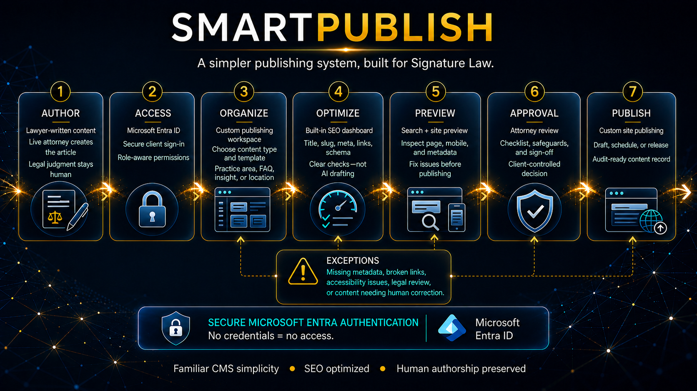

Find every article
Keep drafts and published posts in one searchable library, organized by topic, practice area, tags, author, and status.
SmartPublish is a proposed, site-connected publishing workspace for Signature Law. Attorneys can write or review content, while an authorized ghostwriter can draft, prepare, and schedule posts around the firm’s availability. AI helps with SEO; the firm retains final approval and control of publication.

The goal is to give the firm the everyday convenience of a basic content management system without adding a general-purpose platform and a pile of plugins to maintain.
Keep drafts and published posts in one searchable library, organized by topic, practice area, tags, author, and status.
Use a straightforward editor for titles, article text, images, links, categories, and search metadata, with autosave and revision history.
Preview the article in the firm’s site design, including desktop and mobile layouts, before it goes live.
An attorney may write the post, or a ghostwriter may develop it from the firm’s direction, interviews, and source materials. In either case, an attorney reviews the legal analysis, accuracy, confidentiality, and final version before publication.
An attorney or authorized ghostwriter creates a post, records its author and topic, and identifies the intended audience.
AI reviews the supplied article and suggests a search title, description, headings, related internal links, and clarity improvements.
Resolve editorial and technical checks, inspect the search preview, and review the formatted page on desktop and mobile.
The attorney approves the final content. An authorized publisher can then schedule or publish it, so posts can go out consistently even when attorneys are unavailable.
It can explain its recommendations and offer editable alternatives. It does not invent legal authority, add unsupported claims, or publish on its own.
Drafts stay private. Attorney approval is required before scheduling or publication; the ghostwriter can handle the publishing calendar and routine site updates within that boundary.
We would confirm who can draft, who must approve, how scheduling should work, and the firm’s hosting and sign-in preferences. Then we can test the process with one attorney-led and one ghostwritten post before expanding the system.
Discuss the workflow